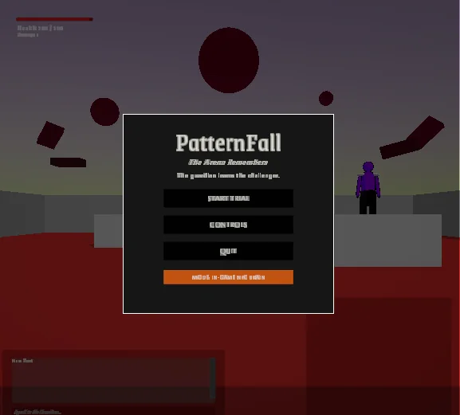
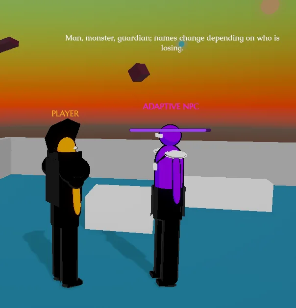
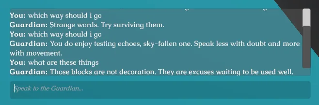
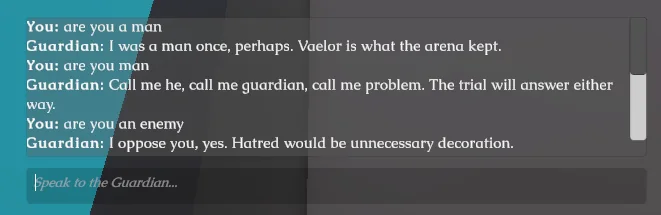
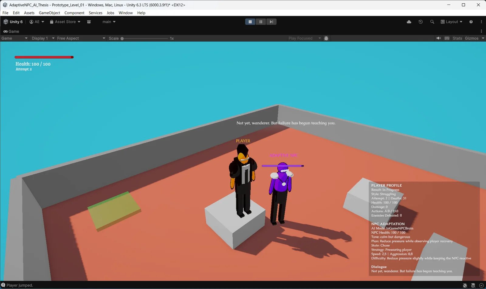
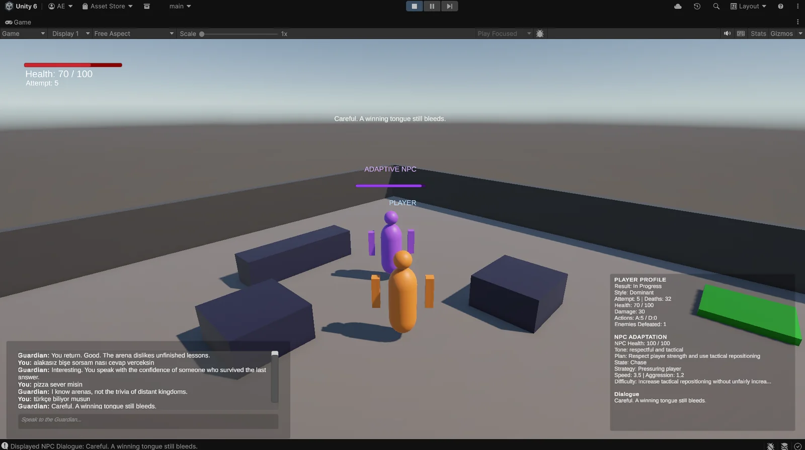
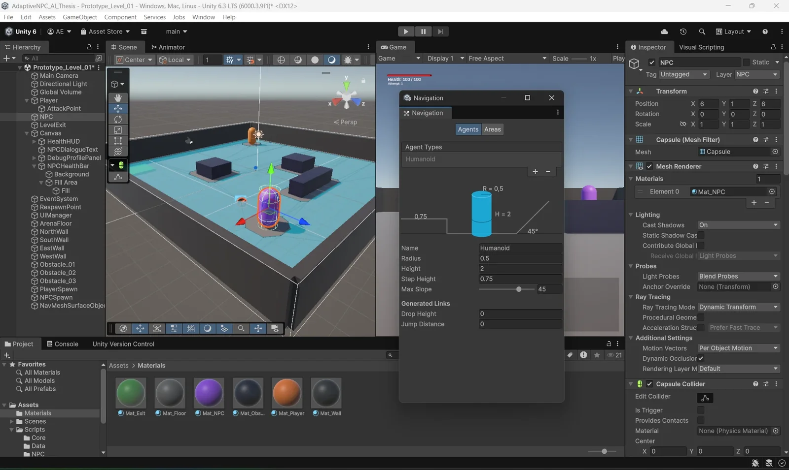
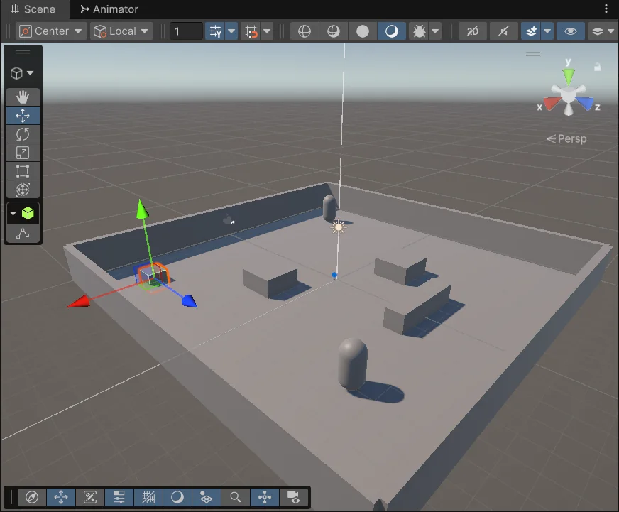

özet
Tez projemde oyun geliştirmeyle yapay zekâ tabanlı davranış uyarlamasını tek bir oynanabilir prototipte buluşturdum. Fikir basit: her oyuncu aynı NPC'yle karşılaşmıyor; NPC'ler senin oyun tarzına göre şekilleniyor.
rolüm
Oyun mekanikleri, oyuncu verisinin takibi, NPC davranış sistemi, arayüz akışı ve yapay zekâ entegrasyonu üzerinde çalıştım.
kapsam
Sistem oyuncunun davranışlarını takip ediyor ve buna göre NPC'lerin davranışını, zorluğa verdikleri tepkileri ve diyaloglarını uyarlıyor.
çıktı
Sonunda elimde oynanabilir bir prototip ve akademik bir rapor vardı. Tez bitti; NPC'ler hâlâ beni izliyor olabilir.
ekran görüntüleri
Tezin oyunu PatternFall. Arenada seni Guardian bekliyor, arenanın verdiği adıyla Vaelor. Nasıl oynadığını izliyor; baskın oynarsan taktiğini sertleştiriyor, zorlanırsan baskıyı azaltıp toparlanmanı izliyor. Ona yazarak soru da sorabiliyorsun; cevapları genelde kısa ve biraz da iğneli. Görseller ilk gri taslaktan son hâline kadar gidiyor; tıklayınca büyüyor.

















teknolojiler
- Unity
- C#
- AI Systems
- NPC Behavior
- Game Mechanics
- NavMesh